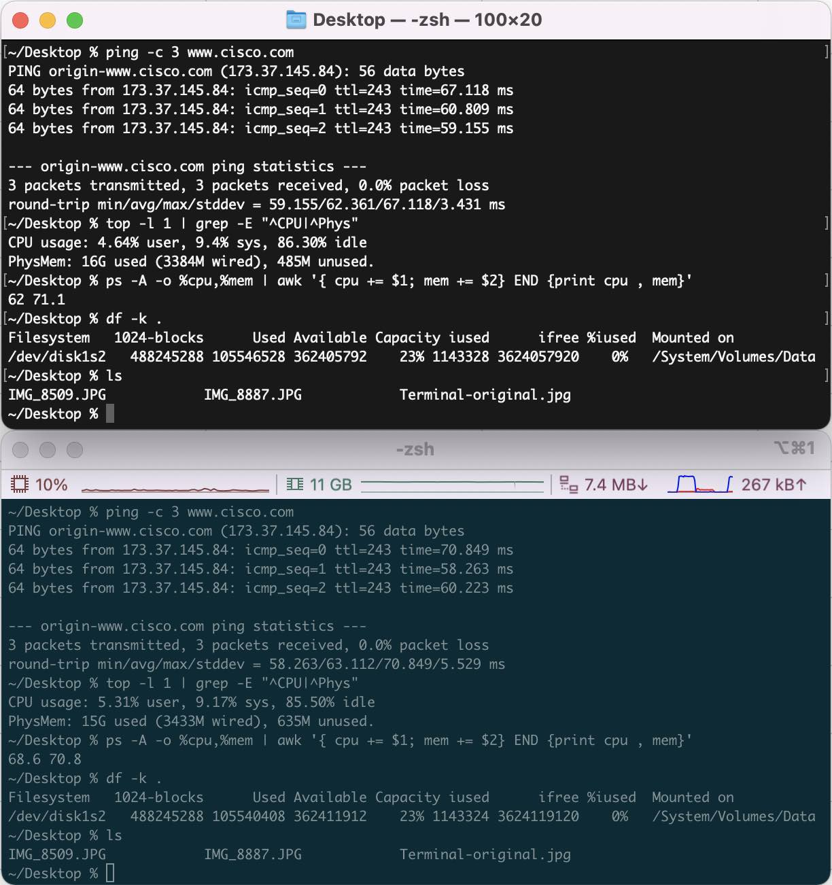
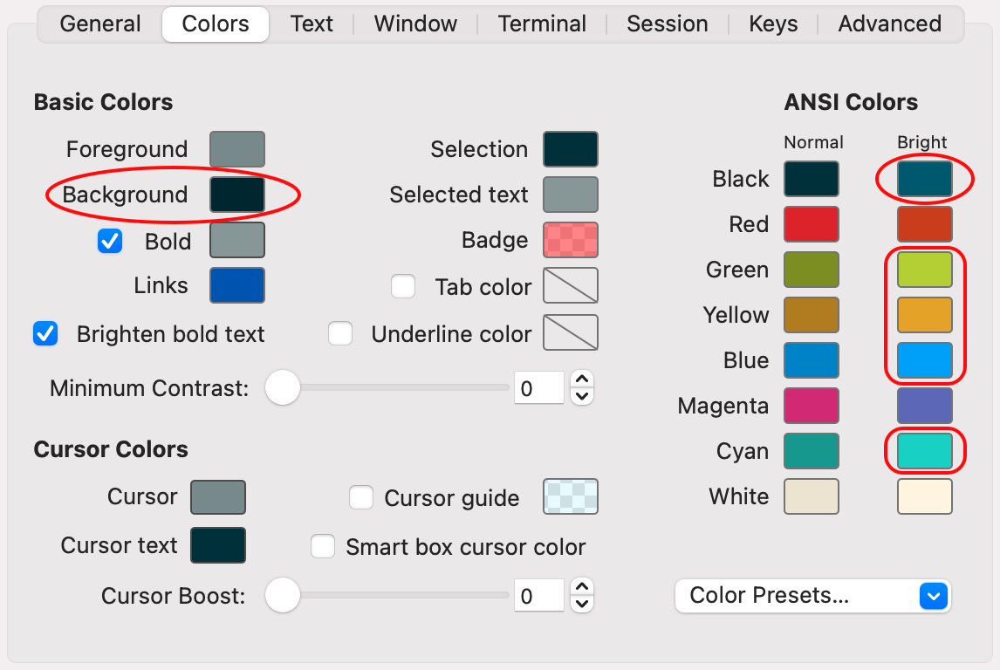
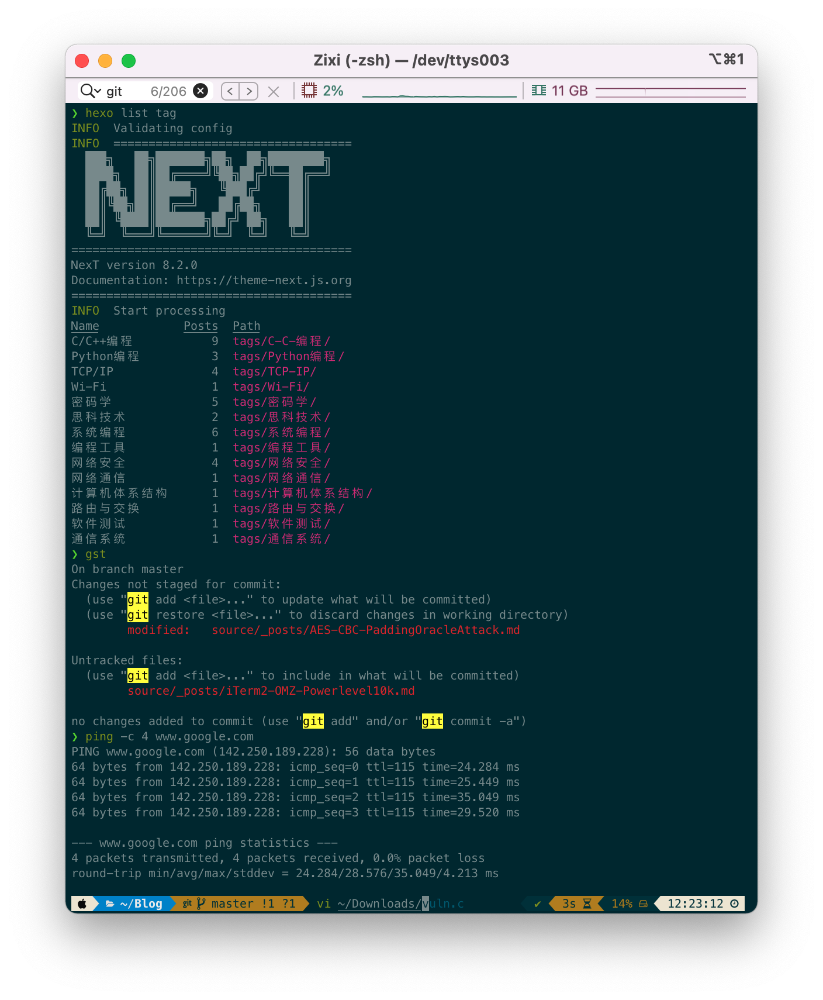
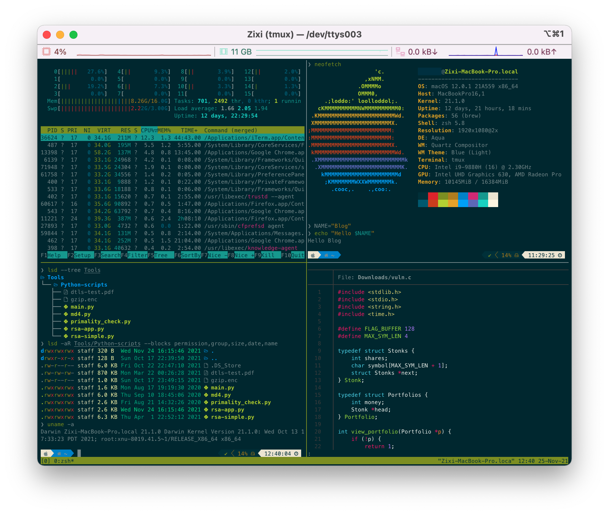

iTerm2 + Oh-My-Zsh + Powerlevel10k 打造酷炫macOS终端
熟练使用基于终端的各种命令行工具，可以让程序员的工作效率倍增。在苹果macOS上，集成终端应用iTerm2、Oh-My-Zsh配置框架和Powerlevel10k主题，能打造出非常酷的资深程序员专业终端。
iTerm2仿真终端
苹果计算机系统的默认仿真终端是Terminal.app。虽然它实现了所有必要的基本命令行终端功能，也提供了一些定制选项（Profiles），但是可配置的内容非常有限，其界面对资深程序员也实在了无生趣。iTerm2是macOS平台上非常优秀的仿真终端替代方案。iTerm2官方网站的自我介绍是：
iTerm2 is a replacement for Terminal and the successor to iTerm. It works on Macs with macOS 10.14 or newer. iTerm2 brings the terminal into the modern age with features you never knew you always wanted.
即iTerm2是将给你带来惊喜的现代化终端应用。下面来看看iTerm2的安装和功能概览。
应用安装
iTerm2官方网提供最新稳定版（3.4.12）的下载链接：https://iterm2.com/downloads/stable/latest。下载后的文件名为iTerm2-3_4_12.zip，大小约为24.1MB。macOS会自动将其解压为应用程序iTerm.app，此时文件变为72.6MB。把该应用程序复制或直接拖拽到Applications目录，就会在Lauchpad见到iTerm的图标，点击即可启动。
功能概览
iTerm2功能特性十分丰富，全面的说明请看其在线文档。这里简单描述一些新用户可以快速上手的特性：
分割页面（Split Panes）：使用
cmd-d或cmd-shift-d快捷键，能迅速垂直或水平分割当前终端会话页面（Tab）。要在分割后的子窗口（Pane）之间游走，可以使用cmd-opt-→/←/↑/↓或cmd-[/]快捷键组合。快捷键cmd-shift-enter将当前子窗口最大化——页面其它子窗口全部被隐藏，再次按同样的快捷键恢复隐藏的子窗口。 快捷键cmd-enter可以让当前页面覆盖全屏，重复输入回到原来页面状态。时间戳：切换View > Show Timestamps菜单选项，或者使用切换快捷键
cmd+shift+e，可让iTerm2直接在终端窗口打印每一步操作的时间戳。比如对于单个ping -c 5命令的每一个重复的操作都会打印一个时间戳。这方便用户了解终端上的命令执行历史和时间间隔。密码管理器：iTerm2可以将你的密码保存在macOS的钥匙串（Keychain）应用中。Use the Window > Password Manager菜单选项能打开密码管理器输入密码。
文本选择和搜索：可以使用鼠标快速选择记录缓冲区的文本，双击选择连续字段，三击选择当前行全部字符。选中即复制，无需再点鼠标右侧或按
cmd+c复制到剪贴板。快捷键cmd-f打开搜索框，可以搜索整个记录缓冲区，还支持正则表达式输入（Regular Expression）。搜索匹配的内容会自动高亮显示。快速打开：输出记录及缓冲区内的字段如果是URL、目录或文件名，将鼠标移到其上方并按住
cmd(⌘)键，该字段会马上变成可点击状态。点击鼠标会自动用预设的应用（浏览器、Finder或Preview）打开对应的网址、目录或文件。撤销关闭：如果不小心关闭了会话页面，在一定的时间内用户可以按
cmd-z撤销并恢复页面。默认的时间是5秒钟。如果想加长延时，可以通过菜单路径Preferences > Profiles > Session修改。Tmux集成：iTerm2与流行的开源终端复用器tmux紧密集成，可以让用户的tmux窗口获得iTerm2原生窗口或页面的操作特性，而tmux自身优秀功能也得到很好的保留。具体使用细节可参考iTerm2-tmux集成文档。
色彩主题：iTerm2外观色彩由菜单项Preferences > Profiles > Colors进行配置，用户可以通过Color Presets列表选择预设色彩主题。如果不喜欢所列的所有主题，可以上网下载其它iTerm2色彩主题再导入选择。如果对某个主题的个别颜色设定不满意，可以对其作单独调整并导出（Export）保存。
状态条：iTerm2提供了可配置及可由脚本控制的状态条，以便即时显示工作环境的状态信息。状态条通过菜单路径Preferences > Profiles > Session设置，点击复选框Status bar enabled开启状态条，再点击Configure Status Bar选择和配置要加入状态条的组件。iTerm2给出的常用组件有处理器和内存利用率、剩余电量、网络吞吐量、时钟、当前主机/用户/目录/任务名称、git状态、搜索框等。iTerm2还支持用户使用其Python API编写的自定义组件。组件选择和配置对话框里的Auto-Rainbow列表可让用户设置状态条组件的配色方案，一般选用Automatic（自动）即可。
下面就是macOS自带的Terminal应用与iTerm2的页面快照比较。这里iTerm2使用的是个人比较喜欢Solarized Dark色彩主题，对比度不太强，眼睛不会太疲劳。注意iTerm2页面顶上状态条显示3个彩色组件：处理器利用率、内存利用率和网络吞吐量（蓝色为下载速率，红色为上载速率）。

Oh-My-Zsh配置框架
Z shell（Zsh）是从Bourne shell改进出来的新一款命令解释器，同时它也加入了Bash、ksh及tcsh的某些功能。2019年自macOS Catalina（10.15版）起，苹果的Mac系统默认Shell以zsh取代之前的Bash。Zsh能定制的內容非常多，但是对新手来说设置过于复杂，因此一开始不太受人欢迎人。后来有人开发了一个配置套件，大大简化了定制设置的过程，zsh才由此真正变得流行起来。这一配置套件就是Oh-My-Zsh。
完整意义上，Oh-My-Zsh是一个建立于zsh之上的、用户社区驱动的开源管理配置框架。它综合了众多的功能插件和配置主题，并提供优选的初始化设置。截止于2021年11月，其GitHub源站点总共绑定了275+个插件和150种主题，同时也带有更新已安装插件及主题的自动更新工具。
安装Oh-My-Zsh
新用户可以选择使用curl或wget工具安装，其命令行分别如下所示：
1 | $ sh -c "$(curl -fsSL https://raw.github.com/ohmyzsh/ohmyzsh/master/tools/install.sh)" |
安装过程的记录如下：
1 | ~ % sh -c "$(curl -fsSL https://raw.github.com/ohmyzsh/ohmyzsh/master/tools/install.sh)" |
安装实际上从GitHub源站点克隆了Oh-My-Zsh到本机用户主目录下，生成.oh-my-zsh子目录。检查子目录内容可以看到Oh-My-Zsh仓储的git分支工作空间：
1 | ❯ ls -anl .oh-my-zsh |
而用户的zsh资源文件也被修改为指向Oh-My-Zsh子目录，默认加入git插件和设置主题为robbyrussell，最后引导那里的oh-my-zsh.sh文件进行初始化：
1 | ❯ grep "^[^#;]" .zshrc |
安装定制插件
定制插件即并非Oh-My-Zsh自身绑定的插件。这里安装两个非常好用的zsh定制插件：zsh-autosuggestions和zsh-syntax-highlighting。
zsh-autosuggestions：此插件在用户键入时，基于命令行历史和完整命令名推荐余下的输入。安装时先从GitHub源克隆仓储到
$ZSH_CUSTOM/plugin目录（默认为~/.oh-my-zsh/custom/plugins）1
git clone https://github.com/zsh-users/zsh-autosuggestions ${ZSH_CUSTOM:-~/.oh-my-zsh/custom}/plugins/zsh-autosuggestions
然后，编辑~/.zshrc文件把它加到插件列表
1
2
3
4plugins=(
# other plugins...
zsh-autosuggestions
)zsh-syntax-highlighting：此插件对zsh提示符后的输入自动匹配语法高亮，可以让用户在实际命令运行前审核输入行，以便及时发现和改正语法错误。安装时同样先从GitHub源克隆仓储到
$ZSH_CUSTOM/plugin目录（默认为~/.oh-my-zsh/custom/plugins）1
git clone https://github.com/zsh-users/zsh-syntax-highlighting.git ${ZSH_CUSTOM:-~/.oh-my-zsh/custom}/plugins/zsh-syntax-highlighting
然后，编辑~/.zshrc文件把它加到插件列表
1
2
3
4plugins=(
# other plugins...
zsh-syntax-highlighting
)⚠️注意：与zsh-autosuggestions不同，为了保证语法高亮的效果，zsh-syntax-highlighting插件必须置于插件列表的最后一项！
定制插件安装完毕后，需要退出再重启iTerm2才能生效。
Powerlevel10k主题
Powerlevel10k是为zsh定做的主题，它的显著特点是高速、灵活及开箱即用的用户体验。用Powerlevel10k定制的提示行包含色彩丰富的图形化符号，可在左右两边都实时显示当前系统和工作目录下的状态，还能与多种工具集成让程序员的工作环境产生惊艳的效果。
在Oh-My-Zsh环境下的安装很简单，直接从Github源克隆Powerlevel10k仓储到$ZSH_CUSTOM/themes目录（默认为~/.oh-my-zsh/custom/themes）
1 | git clone --depth=1 https://github.com/romkatv/powerlevel10k.git ${ZSH_CUSTOM:-$HOME/.oh-my-zsh/custom}/themes/powerlevel10k |
中国大陆用户可以使用 gitee.com 上的官方镜像加速下载：
1 | git clone --depth=1 https://gitee.com/romkatv/powerlevel10k.git ${ZSH_CUSTOM:-$HOME/.oh-my-zsh/custom}/themes/powerlevel10k |
接下来使用编辑器打开~/.zshrc文件，更新ZSH_THEME
1 | $ vi ~/.zshrc |
安装完成后重启iTerm2，会自动触发Powerlevel10k配置向导（Configuration Wizard）。这个向导设计得非常直观和人性化，一步一步引领用户设定界面，所选择的效果一目了然。Powerlevel10k配置向导采用问答的方式进行，大致的流程解说如下：
安装Powerline字体 - 配置向导第一次运行时，会问用户是否需要安装推荐的字体。为了让提示行的图标正常显示，当然要选（y）。这时Powerlevel10k就自动下载Meslo Nerd Font并设置到iTerm2的Profile中，然后提示用户
cmd+q关闭再重启iTerm2使其生效。用户可以打开Preferences > Profiles > Text > Font看到字体已经设定为MesloLGS NF。确认特殊符号是否正常 - 配置向导会与用户核对特殊图标是否能正常显示，如果第1步的字体安装无误，所有特殊符号和图标（菱形、🔒、Debian标识及字符与图标相嵌）都应该正常呈现。
选择提示行风格 - 有简约到丰富渲染程度不等的四种风格（Lean、Classic、Rainbow和Pure）可选，偏好因人而异。个人较喜欢彩虹（Rainbow）风格。
选择字符集 - 有Unicode和ASCII两种选择。如果需要在提示行显示许多花俏的图标，一定要选Unicode。
其它风格细节设定 - 包括是否在右端显示时间及何种时制、提示行内分隔符和末端的形狀、提示行与输入命令是否分隔成两行、命令执行结束记录上滚后是否去除提示行（Transient Prompt）等等。
跟着Powerlevel10k的配置向导完成设置，你就能获得视效满满的终端提示行。在此之后如果想变一下口味，可以输入命令p10k configure启动配置向导重新设定。Powerlevel10k最后生成的配置存放在~/.p10k.zsh中，用户可以编辑此文件作细节微调。
至此，全部必要的软件工具都已经安装配置完毕。最后的.zshrc文件的有效内容如下：
1 | > grep "^[^#;]" .zshrc |
综合调整和效果展示
根据个人喜好的不同，用户可以对 iTerm2 + Oh-My-Zsh + Powerlevel10k 组合作一些整体调节，以打造自己满意的终端界面。个人使用的是iTerm2预设的Solarized Dark色彩主题。虽然它的颜色配置对眼睛较柔和，但缺点是无法看清Oh-My-Zsh自动推荐插件输出的内容。这是由于Solarized Dark色彩主题里Basic Colors > Background与ANSI Colors > Bright Black太接近造成的。矫正的方法是打开iTerm2设置对话框Preferences > Profiles > Colors，将ANSI Colors > Bright Black调亮一些。对ANSI Colors > Bright颜色列表的Green、Yellow、Blue及Cyan也可作相应的调整。矫正结果如下截屏所示

此外，个人还对Powerlevel10k的配置文件~/.p10k.zsh做了了如下微小改动，将硬盘使用率（disk_usage）起始注释符号#去掉，以将其加到提示行右端实时显示：
1 | vi ~/.p10k.zsh |
注意这里load和ram与iTerm2页面状态条的处理器利用率和内存利用率组件显示的信息重复，所以不需要。如果对网络地址分配感兴趣，可以用同样的操作把以上配置段里的内网地址（ip）和公网地址（public_ip）加到提示行右端。
最终，iTerm2 + Oh-My-Zsh + Powerlevel10k 生成的色彩生动的终端界面如下
 此图中展现出来的功能特性有：
- 语法高亮：ping、vi、hexo及gst（git status的别名）命令都用绿色显示。hexo和gst命令的输出也都有对应的色彩变化。
- 彩色状态条：顶上的状态条用不同颜色显示处理器利用率和内存利用率。
- 文本搜索：顶上状态条左侧搜索框显示查找"git"字符串的结果，在整个记录缓冲区内找到206个。在窗口内匹配的内容自动反色突出高亮显示。
- 彩虹提示行：底部是彩虹风格的提示行。左侧显示苹果图标、目录图标和路径，还有git分支名及工作空间状态指示（分支为master，“!1 ?1”表明一个现存文件被修改，及一个未被记录的新文件）。右侧第一个✓图标指示最近的命令运行成功，否则会显示✗及错误码；第二个图标显示上个ping命令的执行时间3s；下一个为硬盘使用率14%；最后是12小时制的当前时间。
- 自动推荐：底部输入vi命令时，根据命令行历史会显示自动推荐的文件名参数。这时键入
→，光标会马上跳到参数末尾。如果要部分修改，可使用delete键左移光标到相关位置，再输入即可。注意光标前后的字符颜色的不同。后面是自动推荐部分，其颜色就是上述调整过的Bright Black。
下面的页面截图，演示了iTerm2与tmux集成后双栏4个子窗口的运行效果：
- 左上 - 运行htop实时监控系统信息
- 右上 - neofetch（一种美化的系统快照工具）的执行结果，以及简单命令行脚本的语法高亮效果
- 左下 - lsd（LSDeluxe—彩色精装版ls）的输出，其中目录和可执行文件分别为亮蓝色和亮绿色，这正是上述Bright Blue和Bright Green调整后的结果
- 右下 - bat（搭配语法高亮和Git集成的cat）的输出
 很显然，iTerm2 + Oh-My-Zsh + Powerlevel10k 组合实现的终端工作环境能够充分地发挥色彩丰富的各类应用的巨大潜力。